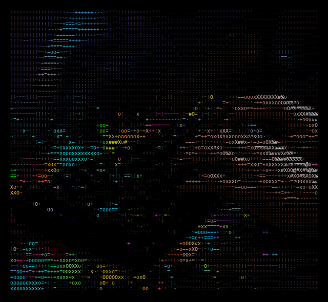

Chapter 2:
Everything I Don't Know About Blogging
And how I'm going to do it anyway

I have a confession to make.
If you were to look at my browser history over the last week, you'd think I was either a) a college student who procrastinated on a major research paper until the night before, or b) someone planning a heist.
The search queries have been all over the place:
- "What is a domain vs. a hosting?"
- "How to make a blog not look like it was built in 2005."
- "SEO meaning for dummies."
- "What is a plugin and why does everyone keep yelling about them?"
Spoiler alert: It's not a heist. It's me trying to start a blog.
For the past month, this has been my slightly embarrassing mission. And I realized something very quickly: I have absolutely no idea what I'm doing.
It's a strange feeling. A few days ago, I wrote about trading my office desk for a laptop on the road, ready to take on the world. The world, however, is apparently run by WordPress dashboards — and let me tell you, it's a lot less friendly than a filing cabinet.
You'd think after years of working with computers, staring at screens and typing away, this would be easy. It's just typing, right? Just words on a screen.
Wrong.
There's a whole universe behind the words. There's the "backend" and the "frontend." There's "caching" and "plugins". There are people online arguing about the best "page builders" like they're discussing politics. I didn't even know what a page builder was until a couple of days ago!
The deeper I go, the longer the list gets of things I need to figure out.
I need to actually acquire a domain name — which feels like claiming digital land, except I'm not entirely sure if I'm buying prime real estate or a swamp. I need to learn enough HTML, CSS and JavaScript to make this place look like it wasn't designed by someone whose aesthetic peaked with GeoCities. I need to understand SEO, which apparently stands for Search Engine Optimization, though it might as well stand for Secret Elite Organization for how mysterious it seems. And once all that's done, I somehow need to market this blog — which means convincing strangers on the internet to care about what I have to say — and I don't plan to start dancing in fron of a camera to achieve this (yet).
Painfully aware doesn't begin to cover it.
I feel like I've walked into a party where everyone already knows each other. The seasoned bloggers are over in the corner, nodding knowingly, throwing around acronyms like inside jokes I'm not yet part of.
And me? I'm standing by the snack table, smiling politely, trying to figure out how to join the conversation.
But here's the thing I'm holding onto.
Last year, I was terrified of quitting the stability of an office. I felt trapped, guilty, and clueless about how to even begin. But I made that leap anyway. I hit "publish" (git push) on my first post and the world didn't end. My computer didn't explode. A few people might even have read it (I would know if I had set up analytics on time).
The internet is a big place. It's full of experts who use big words like "monetization strategy" and "content funnel." I don't have a strategy. I have a story. And right now, I'm just going to put it out there.
I'll probably pick the wrong domain name. I'll definitely spend hours debugging CSS only to realize I missed a semicolon. There's a high chance my "launch day" will be spent frantically googling why my pictures look like blurry potatoes.
And that's okay.
So, here I am. Ready to learn. Ready to make mistakes in public. Because the alternative — staying quiet, staying put, and staying safe — isn't the point of any of this.
If you can explain, in very simple terms, what an "XML sitemap" is, please find me on X or Reddit. I'm the guy with the half-finished website, holding a coffee, and hoping for the best.
I'm still in it for the adventure. I'm just not entirely sure what buttons to press yet.